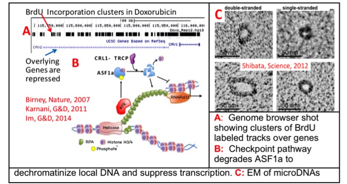
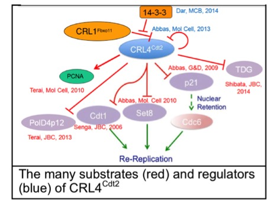

Genomic Instability
We were among the first to use genomic technologies to identify the locations of hundreds of human origins of replication and correlated their time of firing to epigenetic marks that resolve into chromatin domains, as part of the ENCODE pilot project. Recently we used these genomic approaches to demonstrate how anti-S phase chemotherapy agents affect replication origins and the chromatin: (a) checkpoint pathways block later firing origins, after Mcm10 loading before Cdc45 loading, (b) hundreds of latent origins fire in early replicating regions, but the forks stall to produce clusters of stalled replication forks (A in the figure) and (c) an unexpected checkpoint pathway affects the chromatin over these clusters leading to DNA unwinding and transcription inhibition (B in the figure). While applying genomic technologies to evaluate chromosomal rearrangements in cells and cancers, we made the exciting discovery that normal and cancer cells contain thousands of small ‘extrachromosomal circles’ of DNA, which we call ‘microDNAs’, and that the excision of such microDNAs can lead to somatically mosaic microdeletions in the chromosomes, heralding a new form of genomic instability. Study of microDNAs, the mechanism of their generation, their function, and their development as circulating biomarkers for deep-seated cancers is expected to dominate my interests over the next few years.

PCNA, the clamp for DNA polymerases, was known as a processivity factor important for DNA synthesis. We discovered that PCNA has a novel role in targeting several proteins involved in genome maintenance for degradation by CRL4Cdt2. Specialized PCNA-interacting-Peptide degrons target many proteins important for genome stability to PCNA during S phase, where they are recognized by CRL4Cdt2 and polyubiqutinated. Our findings explain how inhibition of CRL4Cdt2 by a novel anti-cancer drug, MLN4924, leads to re-replication in rapidly proliferating cancer cells followed by senescence and apoptosis. We have recently shown that MLN4924 synergizes with cisplatin to restore cisplatin-sensitivity to platinum resistant ovarian cancer cells. This area of research has immediate and significant translational impact.
TIP60, a lysine acetyl transferase, is a critical component of the DNA damage response, being involved in the activation of the ATM kinase and in the dephosphorylation of phospho-H2AX at DNA damage sites after DNA repair. We discovered an important co-factor for TIP60 and other chromatin remodeling complexes (SRCAP, Ino80), called RVB and delineated how and why RVB is important for the activity of TIP60. RVB has recently emerged as a major chaperone (or adaptor protein) involved in the assembly of a wide range of protein and nucleoprotein complexes (like the chromatin remodeling factors, the telomerase complex, DNA damage responsive kinases etc.). We have also identified other regulators of TIP60: the deubiquitinase USP7, the viral oncoproteins E6 (from human papillomavirus) and E1b55K+E4orf6 (from adenovirus).

We showed that different domains of the cell-cycle inhibitor p21 were involved in the interaction with cyclin-cdk and PCNA and that the former was responsible for the cell-cycle inhibition by p21. We followed the p21-cdk interaction to discover a very specialized cyclin-binding motif (Cy motif or RXL) on p21 that was essential for interaction with the cyclin. We went on to discover that many substrates of Cdks (e.g. Cdc6, Cdt1) use the Cy motif as a secondary substrate-specificity sequence to associate with the cyclin-CDK kinases. While I am no longer studying the cell-cycle effects of p21, we recently discovered a long non-coding RNA, APTR, that is recruited to the p21 promoter and helps suppress p21 transcription. Studies on lncRNAs like APTR are progressively becoming very important in the lab.TIP60, a lysine acetyl transferase, is a critical component of the DNA damage response, being involved in the activation of the ATM kinase and in the dephosphorylation of phospho-H2AX at DNA damage sites after DNA repair. We discovered an important co-factor for TIP60 and other chromatin remodeling complexes (SRCAP, Ino80), called RVB and delineated how and why RVB is important for the activity of TIP60. RVB has recently emerged as a major chaperone (or adaptor protein) involved in the assembly of a wide range of protein and nucleoprotein complexes (like the chromatin remodeling factors, the telomerase complex, DNA damage responsive kinases etc.). We have also identified other regulators of TIP60: the deubiquitinase USP7, the viral oncoproteins E6 (from human papillomavirus) and E1b55K+E4orf6 (from adenovirus).